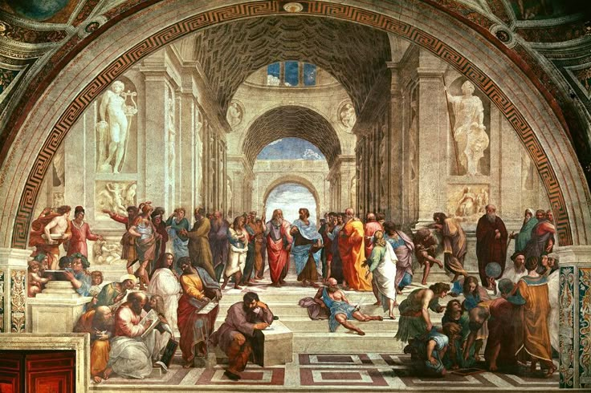
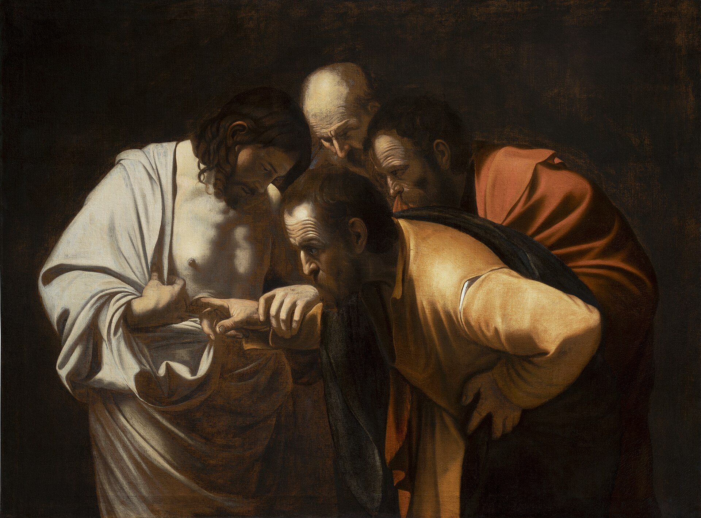
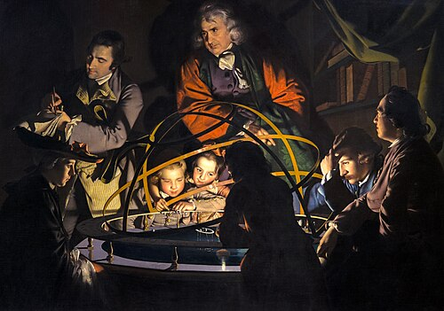
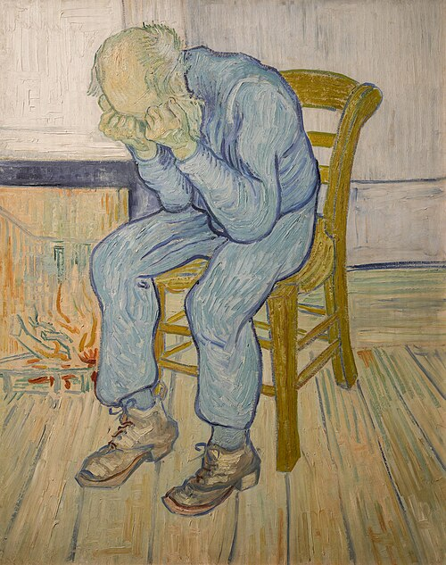
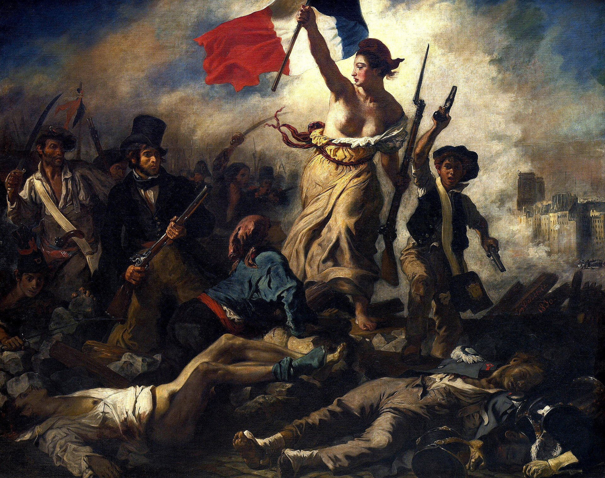
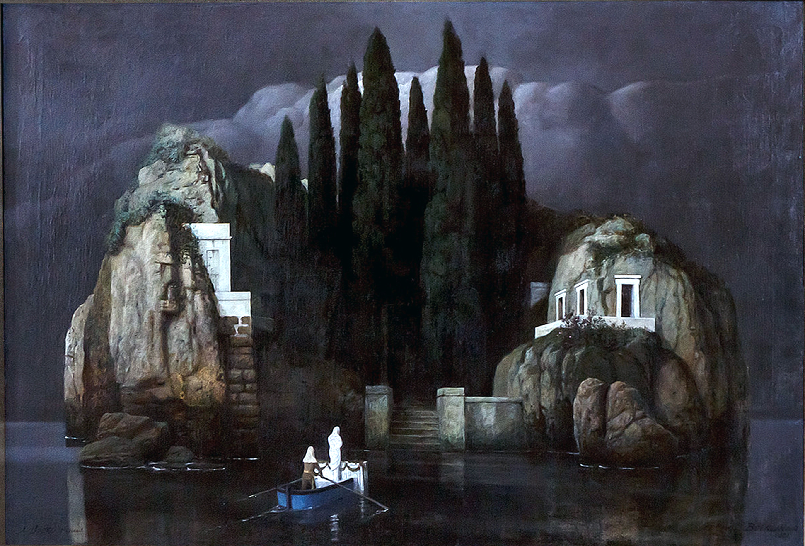

FILOSOFÍA
¿Pensamos realmente por nosotros mismos?
Una reflexión sobre cuánto influyen nuestro entorno y las opiniones de los demás en nuestra forma de pensar.
MENTES INQUIETAS · NUESTRO UNIVERSO
Un espacio para explorar pensamientos, cuestionar lo establecido y descubrir diferentes maneras de entender el mundo.
SELECCIÓN EDITORIAL
Tres ideas que invitan a detenerse, mirar desde otra perspectiva y pensar.
FILOSOFÍA
Una reflexión sobre cuánto influyen nuestro entorno y las opiniones de los demás en nuestra forma de pensar.
 02
02
SOCIEDAD
Sobre las relaciones humanas y la manera en que la tecnología transforma nuestra forma de comunicarnos.
 03
03
ARTE Y CULTURA
Una invitación a mirar con otros ojos aquello que siempre hemos dado por hecho.
UN UNIVERSO DE IDEAS
Cada pregunta abre una puerta. Elige la tuya.

Ideas que cuestionan lo que damos por hecho.

El mundo que construimos entre todos.

Formas de expresar y entender la vida.

Vínculos, emociones y contradicciones.

La fe, las creencias y las grandes preguntas de la existencia.

El conocimiento y nuestra forma de comprender el universo.

La mente, la identidad y todo lo que sentimos.

Los acontecimientos y cambios que transforman nuestro mundo.

Fenómenos inexplicados, enigmas y preguntas sin resolver.
RECIÉN PUBLICADAS